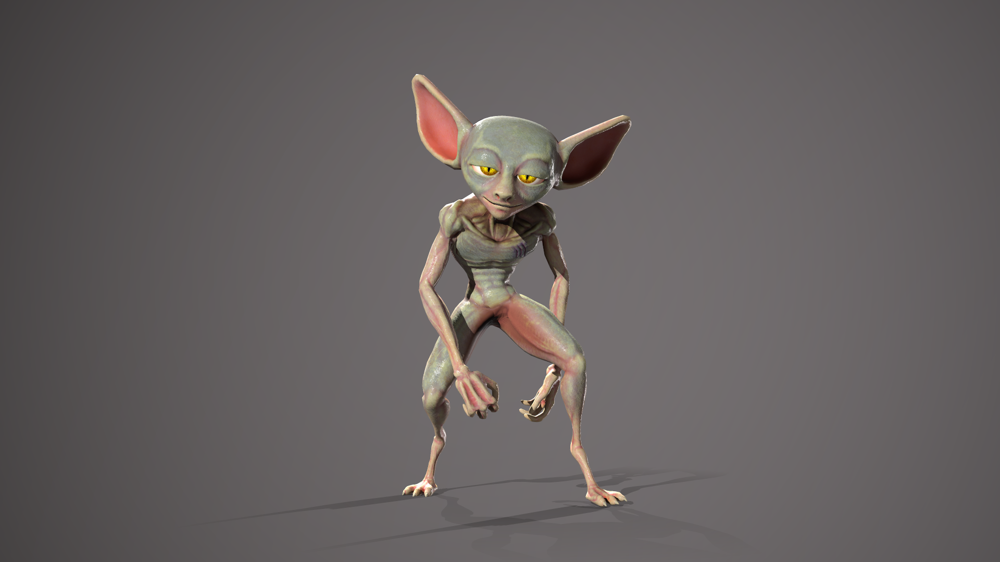
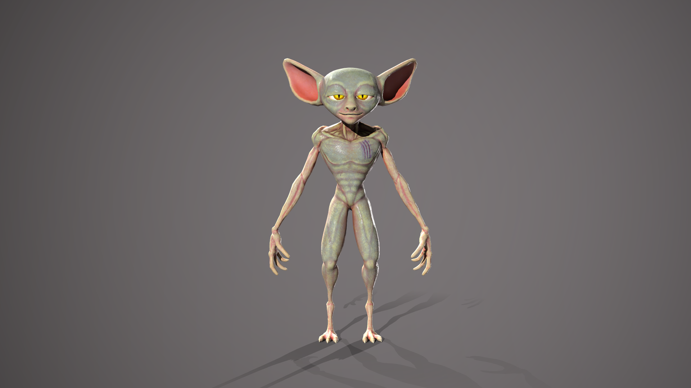
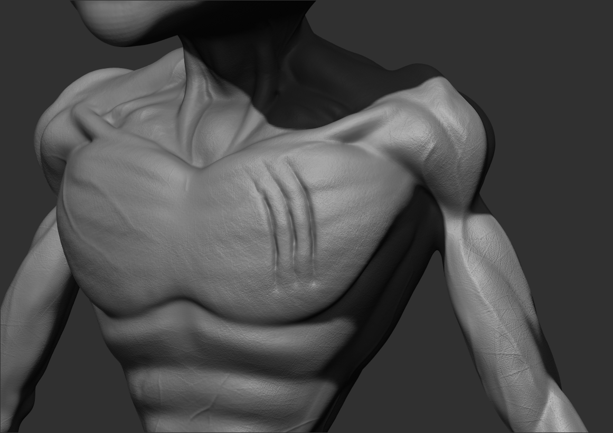
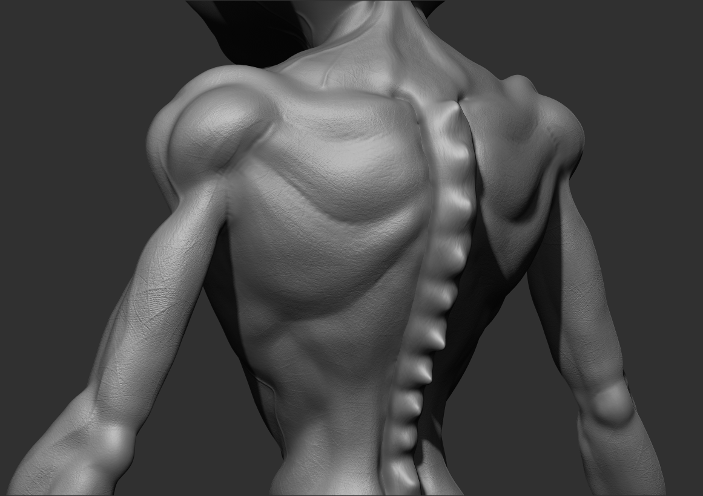
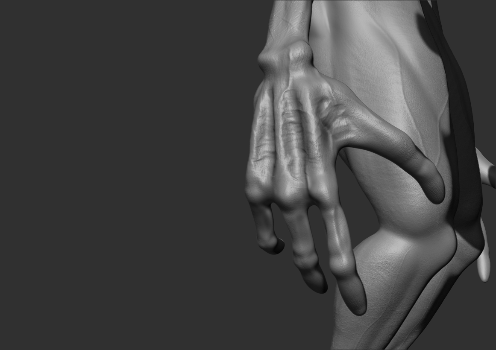

BUSHGORGON
3D MODEL VIEWER READY
Place BushGorgon.glb in the same folder to view interactively

ROLE
Character Modelling, Retopology and Texturing
TOOLS
Blender, ZBrush, Substance Painter, Topogun, Marmoset
TIMELINE
2026
THE CONCEPT
BushGorgon is an original 3D creature modeling project blending various humanoid features with monstrous ones. Taking references from different types of animals and other fictional creatures.
From high-poly sculpting and clean retopology to PBR texturing and studio look-dev, the asset was engineered to hold up both in tight close-up renders and real-time engines.
TURNTABLE
FINAL RENDERS
BEAUTY RENDER 01
POSED RENDER
BEAUTY RENDER 02
FRONT A-POSEHIGH-POLY CLAY SCULPTS

TORSO CLAY SCULPT
TORSO & SCAR DETAIL
BACK CLAY SCULPT
BACK & SPINE DETAIL
HAND CLAY SCULPT
HAND ANATOMY DETAIL